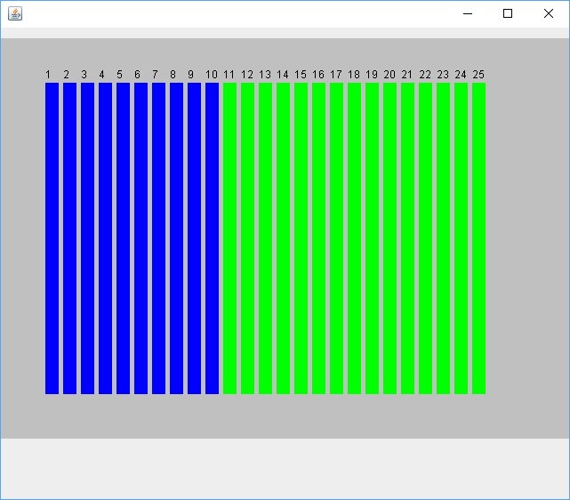
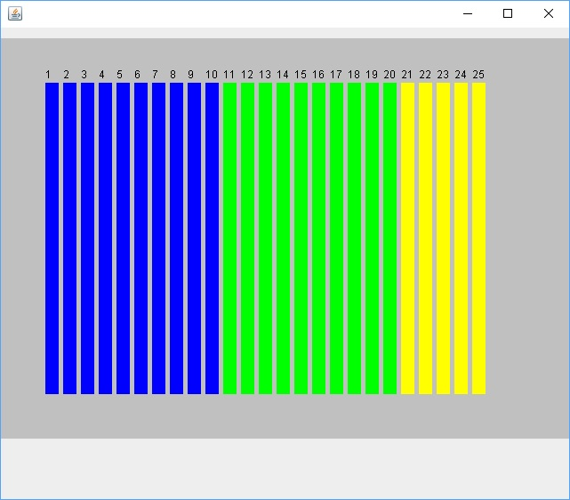
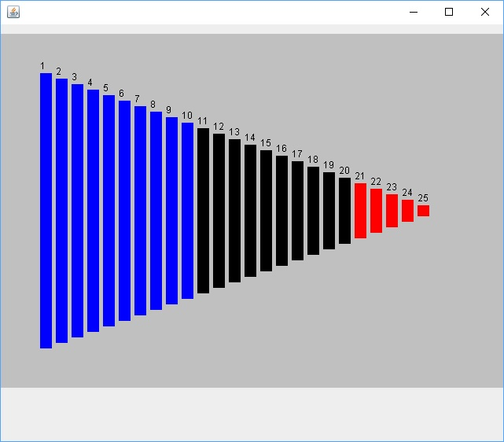
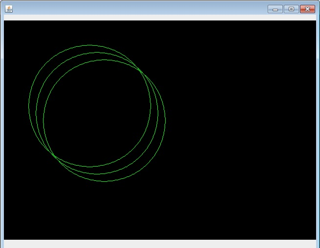
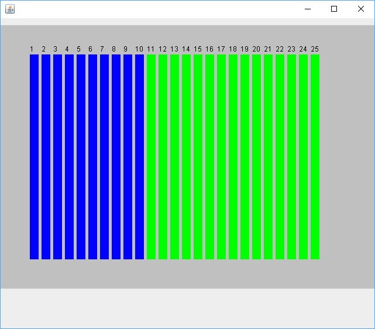
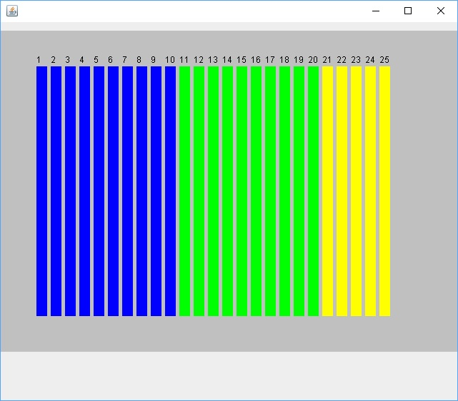
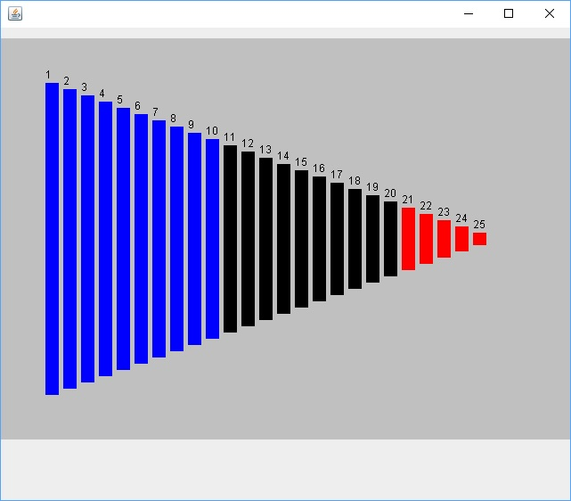
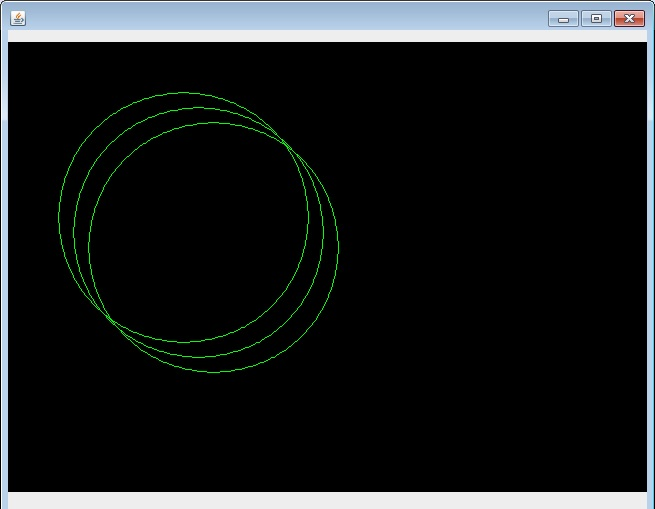
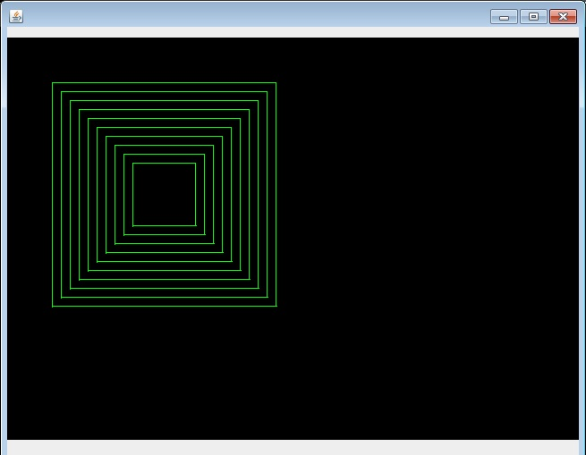
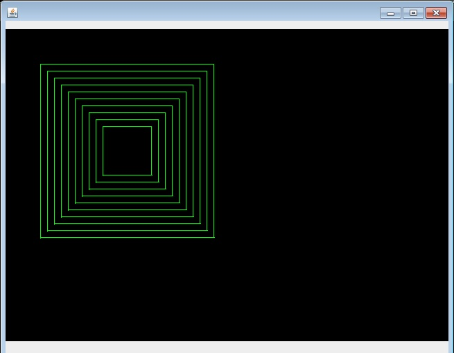

for loops to Draw ShapesWrite lines of Java code (the body of the paintComponent method) that uses a loop to display the following images.
You need to determine how the over, down, width and height variables need to change each time through the loop to generate the pattern of shapes. Some of the images will require an if statement or statements to determine the colors to be used to draw the shapes.

 







 
